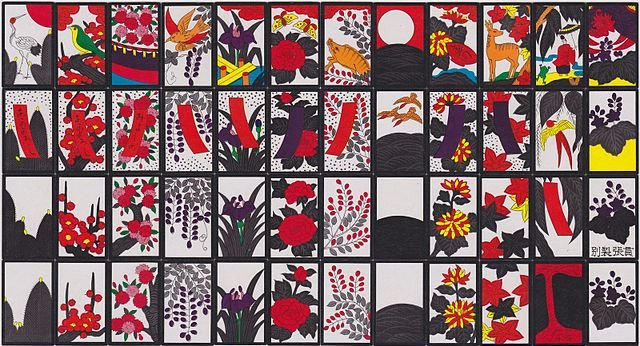
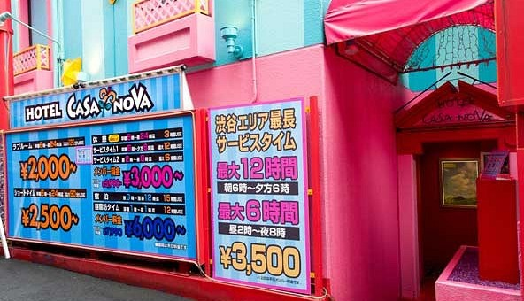
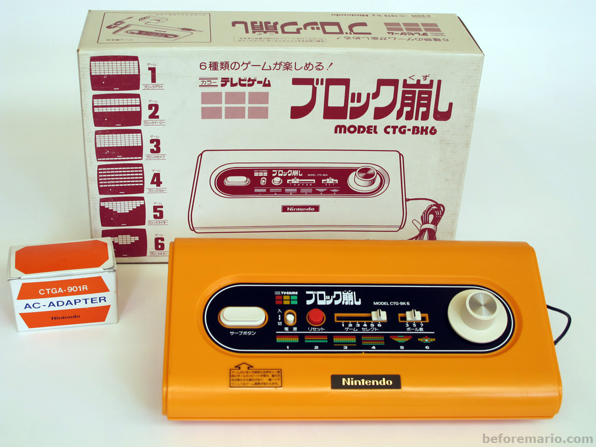
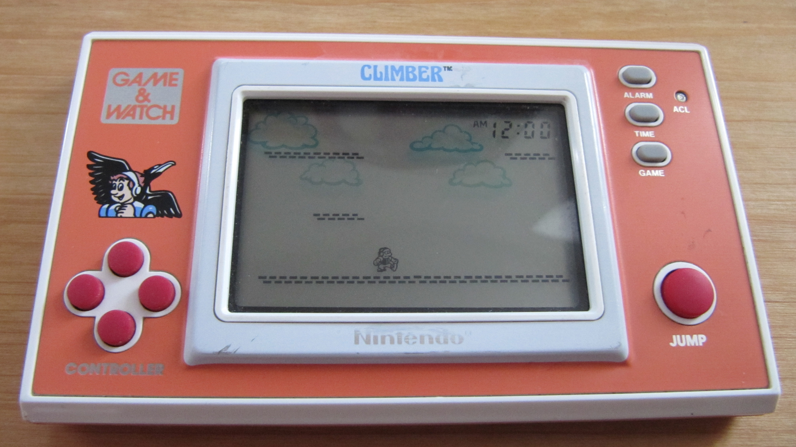
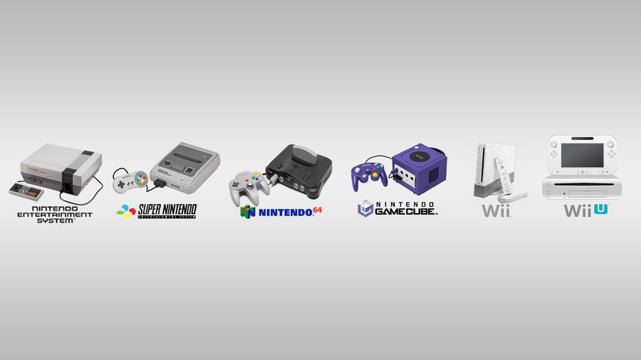

Nintendo History

This is how Nintendo got their start, making traditional playing cards in 19th century Meiji era Japan!
These days Nintendo cultivate a very family friendly image, but that wasn't always the case...
Nintendo is the oldest company in the gaming industry, predating the industry by over 80 years! They got their start making "Hanafuda" cards, a traditional type of card game in Japan with flower pictures. They remained a playing card company until 1965 when realizing the limitations of the playing card industry, they decided to branch out under the leadership of the legendarily grumpy Hiroshi Yamauchi. Nintendo tried a lot of different things at this time, taxis, instant noodles, love hotels (hotel rooms that can be rented by couples on a per hour basis, you have to provide your own partner), and most importantly toys. An electronic engineer named Gunpei Yokoi was plucked from factory conveyor belt maintenance and would come up with their first major success, the Ultra Hand!

Nintendo's first major success in the toy industry
In 1972, Nintendo began dipping its toes in the industry it is now most famous for, video games! They began by producing lightgun games for arcades and the Magnavox Odyssey, then in 1974, licensing and distributing the archaic Magnavox Odyssey, the first commercially available home game console, in Japan. Bear in mind this was the very early days of gaming, Pong had yet to be invented. In 1977, Nintendo collaberated with Mitsubishi to produce the Color TV Game 6.
Nintendo's first games console, a collaboration with Mitsubishi
At the time, game arcades were also beginning to take off. Nintendo started in 1975 with EVR Race, but it wasn't until 1981 when Nintendo had it's first major hit with Donkey Kong. Donkey Kong was a single screen arcade platform game with four distinct stages and no scrolling. Everyone and his dog knows how Donkey Kong plays, but it cannot be overstated just how important this game is. Nintendo ported Donkey Kong and the original (non Super) Mario Bros to home cosoles of the time, the Atari 2600 and Colecovision. While they had yet to manufacture their own home console, in 1980 Nintendo introduced the first portable games machine, the Game & Watch! These primitive games were based on watch LCD displays. Gunpei Yokoi got the idea whilst observing a bored Japanese slaryman playing with a calculator while on his daily commute on the train. When powered them up, they would display every single possible animation frame simultaneously (well I use the term animation frame loosely, there was no animation, each space on the game screen held a static picture, and pressing buttons would switch between these static pre drawn images, just like an LCD watch. While ridiculously primitive by today's standards, they could still be fun in short bursts. If you had one of these back in 1982, you were doubtless king of the schoolbus and playing them in the car with the sound on was a great way to annoy parents! Nintendo produced increasingly complex and sophisticated versions of these games until the release of the GameBoy in 1989. These games were later emulated by Tiger Electronics who continued to produce some (usually shockingly poor quality) licensed games well into the 90s They're worth quite a lot of money these days, so if you happen to have one lying around in decent condition then have a look on ebay and see what they're going for these days!
And Nintendo's first portable games machine. A far cry from the Nintendo Switch!
In 1983, Nintendo released the Famicom in in Japan. This was later redesigned and released in America in 1985. The NES was a big step up frok the home consoles of the time, capable of much more sophisticated games than the dominant Atari 2600. The Famicom also introduced the world to the plus shaped D Pad. Prior to this, games were usually played with paddles, dials and flight style joysticks and quickly became the industry standard movement input of choice during the 2D gaming era. While early NES and Famicom games were mostly arcade style games, Nintendo was gradually introducing games with greater depth and creating iconic characters to star in them. First and foremost was Super Mario Bros in 1985, a revolutionary scrolling platformer with dozens of unique stages, power ups and varied level themes. Then in 1986 came the original Legend of Zelda and Metroid. Massive adventure games that require thorough exploration that were impossible to beat in a single setting. With games like these, the NES became a household name and quickly dominated the industry. All this happened amidst the videogame crash of 1983, where poor quality games flooded rival systems and almost killed the industry outright.
Nintendo rode high on the wave of its own success, with sequals to Zelda and Super Mario Bros. But as the years wore on, new competitors began to emerge, most notably NEC with the PC Engine and the Sega Megadrive in 1989, offering the next generation of "16 bit" graphics. It must be noted that while Nintendo were dominating in America and Japan, in Europe they had almost no presence whatsoever. Efforts to distribute the NES in Europe were half hearted at best.The European market was dominated by home computers such as the ZX Spectrum and Commodore 64. In 1990 Nintendo released the sequel to the Famicom/NES in Japan, the Super Nintendo. And this is where the history lessons for this website, you can find out all about the SNES by following the various links on this site!. That is not to say the Nintendo story ends there, the SNES was of course followed up by the revolutionary Nintendo 64, the underperforming but charming Gamecube, the smash hit, but slightly gimmicky Wii, the poorly concieved flop the WiiU, and the very lovely portable/home console hybrid the Nintendo Switch!
